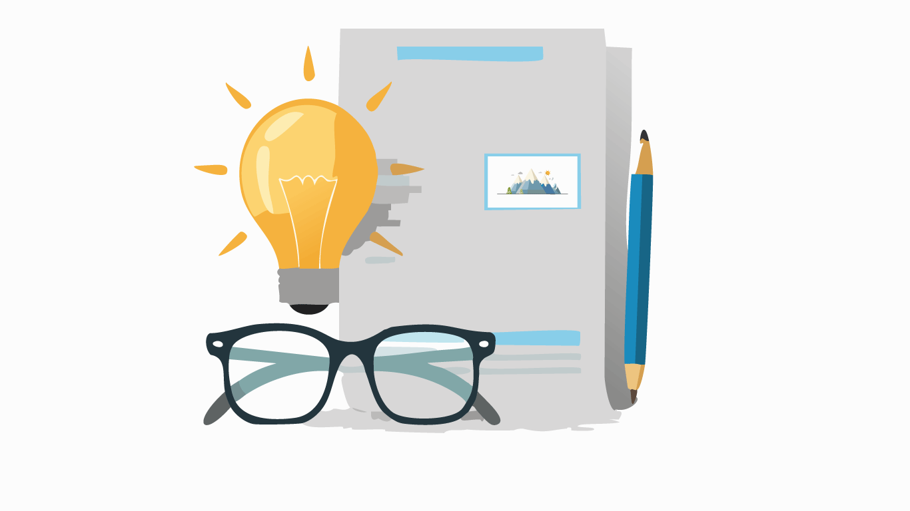

Etappe 4Klug lesen
Wie liest man wissenschaftliche Texte effektiv?
Zum Anhören 👂
Diese Inhalte gibt es zum Anhören. Folge antippen zum Abspielen.
Zum Lesen 📚
Beginnen Sie damit, den gesamten Inhalt in den nächsten 10–15 Minuten einmal zu überfliegen, um einen Überblick zu bekommen. Notiere Sie dabei 3–5 Kernlernziele, die für Sie am wichtigsten erscheinen oder am schwierigsten sind. Widme Sie dann fokussierten Lernblöcken, z. B. 25 Minuten Lernen, 5 Minuten Pause (Pomodoro-Technik), um die folgenden Schlüsselthemen zu vertiefen.
Schlüsselbegriffe
Kontext & Bedeutung
Diese Konzepte sind entscheidend für die Entwicklung kritischer Denkfähigkeiten und methodischer Kompetenzen, die im gesamten akademischen Studium und darüber hinaus von grundlegender Bedeutung sind. Ein Verständnis dieser Strategien ermöglicht es Studierenden, effizienter und effektiver mit der Informationsflut umzugehen, die Relevanz wissenschaftlicher Publikationen zu erkennen und somit ihre eigenen Forschungsarbeiten auf einem soliden Fundament aufzubauen. Die bewusste Integration und kritische Nutzung neuer Technologien wie KI bereitet auf die Anforderungen der modernen wissenschaftlichen Praxis vor und fördert eine fundierte Auseinandersetzung mit komplexen Themen.
Kernprozesse, Modelle & Regeln
Workflow für wissenschaftliches Arbeiten
- Fundament legen: Start mit klarer Forschungslücke und beantwortbarer Forschungsfrage.
- Systematisch suchen: Nutzung diverser Suchwerkzeuge (Fachdatenbanken, Kataloge) und gezielter Suchstrategien (Operatoren).
- Qualität vor Quantität: Priorisierung von Fachdatenbanken für wissenschaftliche Tiefe, Google Scholar als Einstieg.
- Quellenkompetenz zeigen: Kritische Prüfung, Bewertung der Vertrauenswürdigkeit und transparentes Zitieren (KI-Ergebnisse prüfen!).
- Iterativ Reflektieren: Prozess spiralförmig – ständiges Reflektieren, Fokussieren und Prioritäten setzen, um zielgerichtet zu bleiben.
Journal-Rankings
Methode zur Bemessung der „Qualität" wissenschaftlicher Journale, basierend auf Zitationsanalysen (Impact).
- VHB-Ranking: Basis: Befragung von BWL-Professoren in D/A/CH. Kriterium: Wahrgenommene wissenschaftliche Qualität. Ergebnis: Ranking-Stufe zwischen A+ (international führend) und E (weniger wiss. relevant).
- SJR-Ranking: Entwickelt von Scimago Research Group (Scopus-Daten, Elsevier). Ziel: Objektive Messung wissenschaftlicher Sichtbarkeit. Grundlage: Anzahl der Zitationen der letzten 3 Jahre, gewichtet nach Reputation der zitierenden Zeitschrift. Ergebnis: H-Index und Quartil-Einteilung (Q1 = führend bis Q4 = unterdurchschnittlich).
CRAAP-Test
- Currency: Ist die Information aktuell?
- Relevance: Bezieht sich der Text auf andere wissenschaftliche Veröffentlichungen? Verfügt er über Verweise und ein Literaturverzeichnis?
- Authority: Wer hat die Arbeit geschrieben? Handelt es sich um Expert:innen, arbeiten sie in einer wissenschaftlichen Einrichtung?
- Audience: Richtet sich die Veröffentlichung an die wissenschaftliche Community?
- Purpose: Sind wissenschaftliche Erkenntnisse das Hauptziel des Textes? Ist er neutral geschrieben, ohne andere Ziele (politisch, finanziell)?
Workflow Literaturrecherche & -handling (5 Schritte)
- Suchen: Ausfindigmachen geeigneter Literatur in Datenbanken (z. B. Google Scholar). Unterscheidung: Zitierinformationen (Autor, Titel, Datum, ID), Open-Access-Elemente (Titel, Abstract, Literaturverzeichnis), Volltexte.
- Screenen: Einschätzung der Eignung des Werks meist anhand von Open-Access-Elementen (Volltext nicht zwingend nötig).
- Sammeln: Geeignete Werke in einer Liste (z. B. Zotero) mit Zitierinformationen festhalten.
- Lesen: Eines geeigneten Werks.
- Extrahieren: Zentrale Inhalte aus dem Werk als Tag oder Notiz festhalten (z. B. in Zotero).
Workflow: Denken – Lesen – Schreiben
- Lesen eines Artikels.
- Skizzieren der Gedanken (idealerweise mit Stift auf Papier, nicht tippen) zur Gedankenreifung.
- Formulieren der ausgereiften Gedanken.
Methode der drei Blicke
- Blick 1 – Die Essenz: Forschungsfrage, Antwort darauf, Studienablauf (meist Abstract genügt).
- Blick 2 – Die Qualität: Kausalaussagen möglich? Theoretische Basis solide? Ungereimtheiten? (Vertiefung im Studienverlauf).
- Blick 3 – Die Details: Theorien/Befunde, empirische Methoden, Ergebnisse im Detail (Vertiefung im Studienverlauf).
3 Phasen des Fokus Reading
- Phase 1 – Überblick verschaffen: Abstract, Introduction, Conclusion/Discussion, Headlines, Diagramme lesen. Unbekannte Worte kennzeichnen. Ziel: Eigene Zusammenfassung (1–2 Sätze).
- Phase 2 – Deep Dive: Eigene Fragen an den Text beantworten (Kern, Hauptargumente, Relevanz). Unbekannte Worte nachschlagen. Ziel: „Studienprofil" anfertigen (Forschungsfrage, Ursache, Wirkung, Hauptergebnis, Stichprobengröße, Studienablauf, Interessantes, Ansatzpunkte).
- Phase 3 – Deep(er) Dive (Reflexion & Analyse): Prüfen, ob Autoren Versprechen hielten, Methoden angemessen, Argumente logisch. Ziel: Eigene Notizen (in eigenen Worten), Zitationsstellen markieren.
Lesereihenfolge nach Inhaltsdichte
- Titel (höchste Dichte)
- Abstract
- Abbildungen, Diskussion (Anfang), Gliederung
- Rest
Weitere Lesemethoden
- SQ3R: Survey, Question, Read, Recite, Review
- PQ4R: Preview, Question, Read, Reflect, Recite, Review
- THIEVES: Title, Headings, Introduction, Every first sentence, Visuals & vocabulary, End questions, Summary
KI-Nutzung im wissenschaftlichen Arbeiten
Einsatzmöglichkeiten:
- Automatische Zusammenfassungen
- Vereinfachung komplexer Passagen
- Interaktives Lesen
- Literaturempfehlungen
- Schlüsselwort- und Themenextraktion
⚠ Wichtige Hinweise zur KI-Nutzung:
- Kritische Prüfung der KI-Ausgaben (zunächst mit Vorwissen testen).
- Prompt-Optimierung: Präzise Fragen führen zu hilfreichen Antworten.
- Kombination von Tools für verschiedene Aufgaben.
Strategien bei Lesefrust
- Akzeptanz: Es liegt nicht an mir; niemand versteht alles sofort.
- Strategischer Rückzug: Erst Einleitung und Fazit lesen.
- Übersetzungsarbeit: Inhalt in Alltagssprache formulieren.
- Teamarbeit: Austausch mit Kommiliton:innen.
- Kleine Siege feiern: Verstandene Sätze markieren.
- Perspektive bewahren: Wissen erschließt sich schichtweise; Lesen ist Training.
Publikationsarten & Qualitätsrankings
Publikumszeitschriften / Magazine / Zeitungen
- Merkmale: Seriös oder reißerisch, Allgemein- oder Spezialwissen, keine Peer Review, ggf. keine dauerhafte Verfügbarkeit.
- Qualitätspresse (z. B. Die Presse, NYT, Süddeutsche, Die Zeit): Nicht oder nur beschränkt zitierwürdig, aber zitierfähig.
- Boulevardpresse (z. B. Bild, Neue Kronen Zeitung): Nicht zitierwürdig.
Wissenschaftliche Fachzeitschriften
Merkmale: Seriös und verlässlich, Autoren sind Forscher, Spezialwissen, peer reviewed, mit Dokumentation (Zitate, Literaturverzeichnis).
Beispiele (zitierwürdig & zitierfähig): Journal of Applied Psychology, Journal of Marketing, Journal of Consumer Research.
Qualitätsrankings für Journals
- VHB (vhbonline.org): Wirtschaftsfokus, deutschsprachiger Raum.
- Harzing.com (Journal Quality List): Vereint verschiedene Qualitätsrankings (VHB, Financial Times, CNRS).
- ABDC (Australian Business Deans Council): Wirtschaftsfokus, Regionalbezug Australien.
- Handelsblatt-Ranking BWL: Wirtschaftsfokus, international.
- SJR (Scimago Journal & Country Rank): Branchenunabhängig, international.
- Beall's List: Liste potenzieller Predatory Journals und Publisher.
Journal Rankings – Beispiele
| Journal | VHB Ranking | SJR-Ranking |
|---|---|---|
| Journal of Applied Psychology | A | Q1, h-Index 340 |
| Journal of Marketing | A+ | Q1, h-Index 284 |
| Journal of Retailing | A | Q1, h-Index 168 |
| Journal of Consumer Research | A+ | Q1, h-Index 220 |
| Journal of Sport Management | C | Q1, h-Index 89 |
| Journal of Fashion Marketing & Management | k.R. | Q1/Q2, h-Index 67 |
KI-Tools für wissenschaftliches Arbeiten
| Tool | Hauptfunktion |
|---|---|
| Elicit | Automatisierte Literaturrecherche, Q&A |
| SciSpace | Text-Zusammenfassung, Themensuche |
| Litmaps | Zitations-Landkarten erstellen |
| Semantic Scholar | KI-Zusammenfassungen, Zitationsanalyse |
| Explainpaper | Abschnitte in einfacher Sprache erklären |
| Genei | Zusammenfassungen, Schlüsselwortextraktion |
| Scopus AI | Concept Maps, Foundational Documents |
| ChatGPT / Perplexity | Vielseitiger Assistent (allgemeiner KI-Assistent) |
| DeepL | Übersetzung |
| Grammarly | Rechtschreib- und Grammatikprüfung |
| Zotero | Literaturverwaltungsprogramm |
Wesentliche Fakten & Daten
- Eine Masterarbeit sollte in der Regel nicht zitiert werden, da Masterstudierende noch nicht als Wissenschaftler gelten (fehlende Autorität).
- Wikipedia-Artikel sind nicht zitierwürdig für wissenschaftliche Arbeiten (anonyme Verfasser, Fokus auf breite Öffentlichkeit).
- Eine Studie des Europäischen Parlaments (wenn sie akademische Standards erfüllt) kann zitierwürdig sein.
- Ca. 98 % aller Fachartikel sind auf Englisch verfasst.
- KI-Tools können helfen, schneller zu verstehen, relevante Literatur zu finden und den Überblick zu behalten, da wissenschaftliche Texte oft komplex und umfangreich sind.
- KI macht viele Fehler und interpretiert Quellen falsch – nie blind vertrauen.
- Nicht alle KI-Tools haben Zugriff auf alle wissenschaftlichen Datenbanken (z. B. lizenzierte Journals).
- KI ist ein Algorithmus (basierend auf Wahrscheinlichkeiten), kein Gehirn.
- KI-Tools beschleunigen das Scannen, ersetzen aber nicht die kritische Auseinandersetzung.
Um dein Wissen langfristig zu verankern, nutze die Methode der gestaffelten Wiederholung: